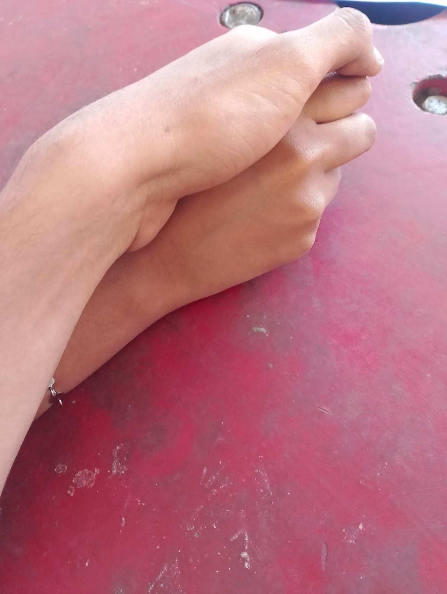
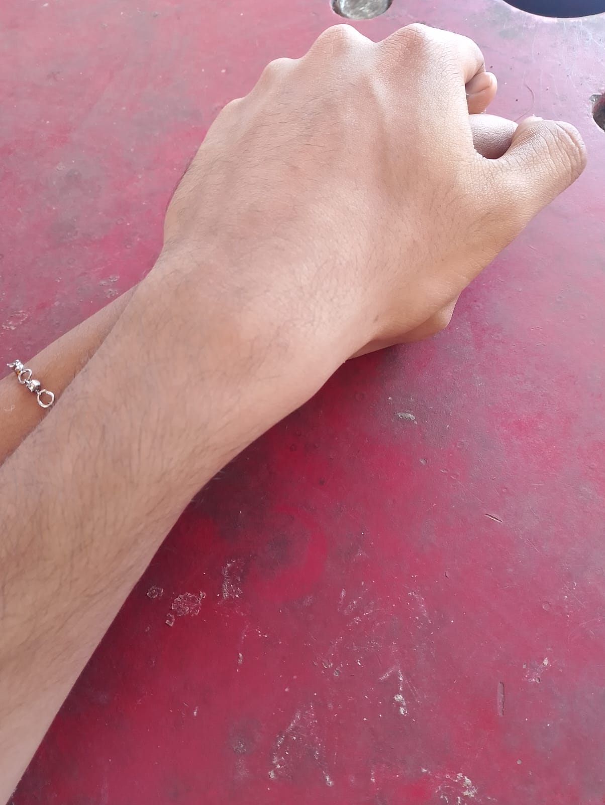
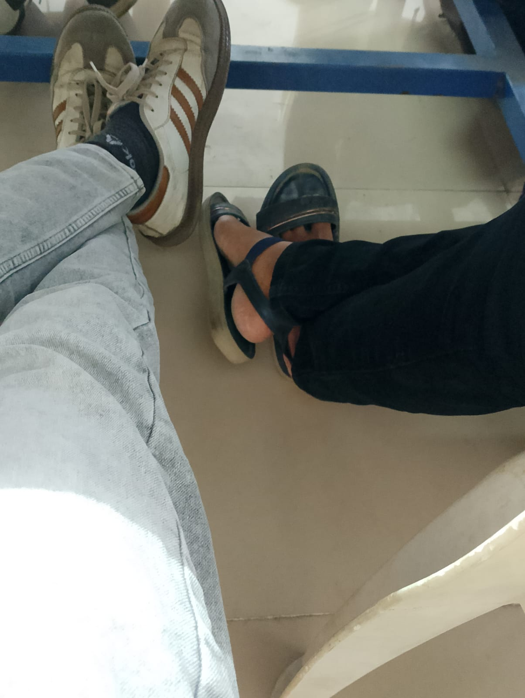
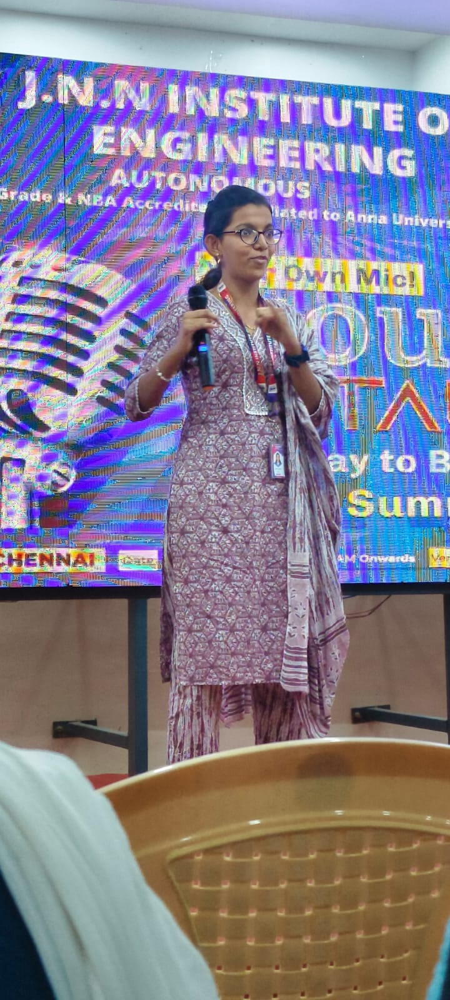
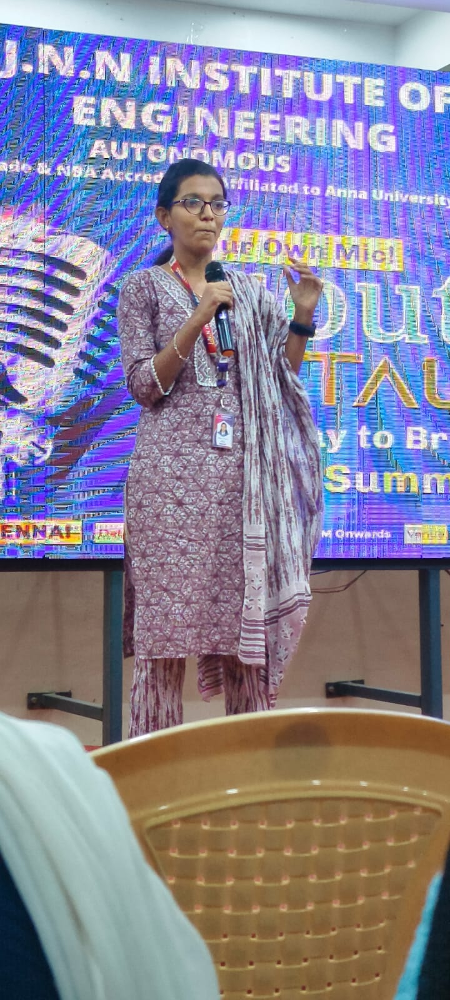
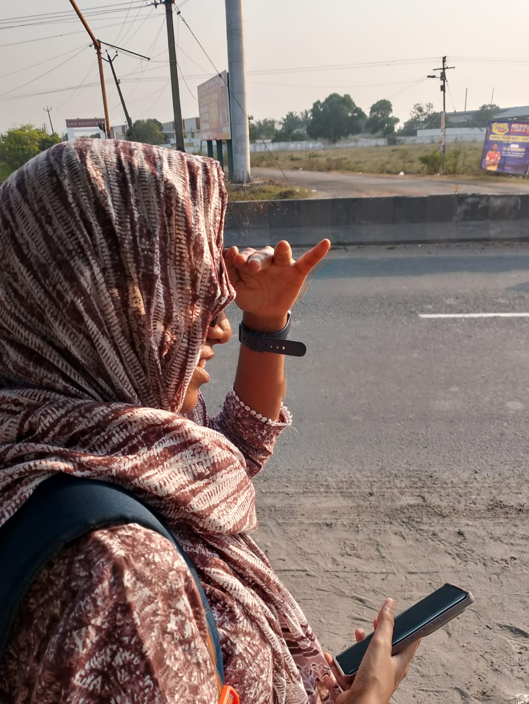
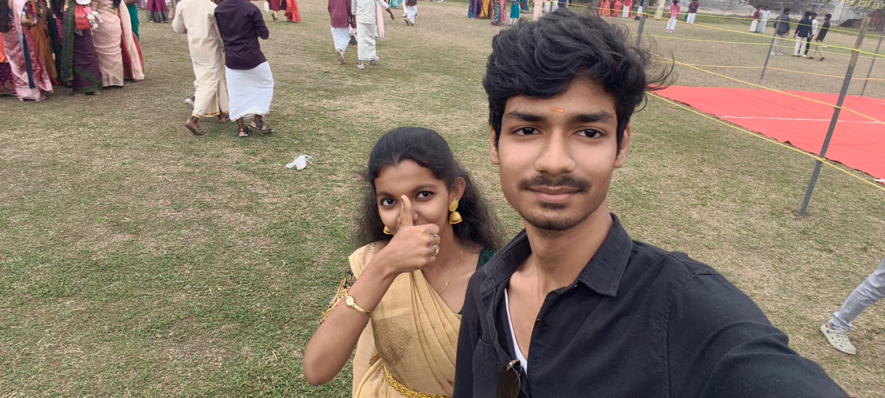
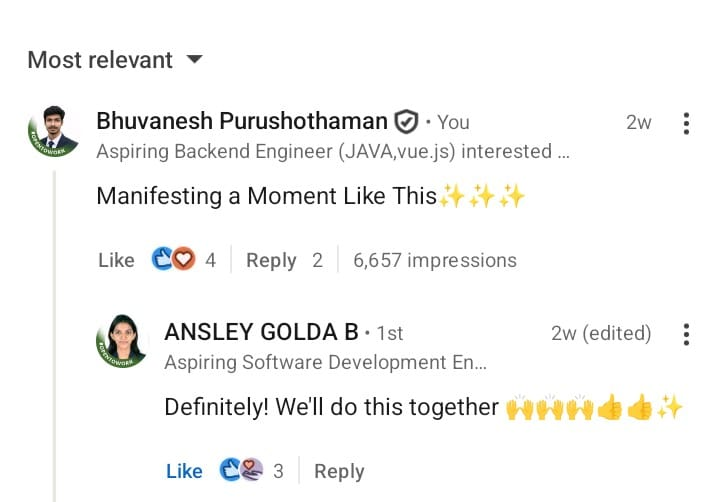
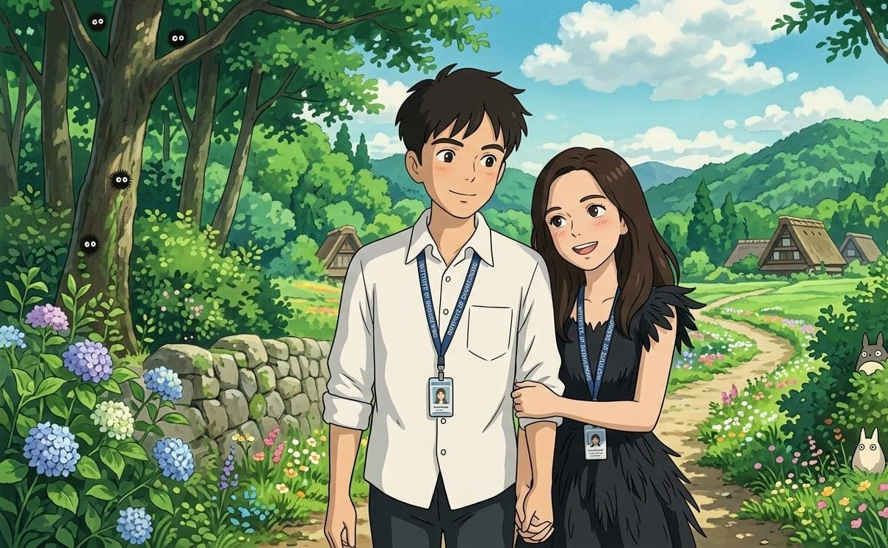

But I don't know what to do but I've made this for you ❤️









Hey Eruma namma evlo memories onna cherish pannirukkom pathiya, we have gone through both Happy and Sad Situations Eruma ......
I know the Pain you've gone through a I know how you felt when you've been said you are not a part of MC event..... Nee en munnadi feel ipa vara kannu munnadi Eh irukku eruma....
I feel very sad for that eruma but I know we'll tackle this together bcuz we know how we guys are don't feel very sad eruma..... Think about the moments we've been together.....
We can't guarantee that setbacks don't attack us again we should be always together for each other to hold us back erumaaa....
Enakku theriyum how you felt when I said it to youu and I saw you when u were weeping, but don't Worry........
Hey Namma Acheive Panna neraya irukku Eruma vaa Pathukala .... For You Always I'll be eruma vaa Pathukala.........